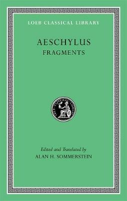

8:48 · 5 OPERE
Una realtà arroventata dalla pazzia.
Il filo del discorso
Dr Divago descrive il predominio della comunicazione di massa come una perdita dell’orientamento razionale e della capacità di riconoscere il significato delle parole. Richiami a Kant, Platone, Eschilo e Sofocle accompagnano la critica del conformismo e della confusione fra avanzamento tecnico e maturazione umana. Il racconto della Genesi e la domanda rivolta ad Adamo conducono alla conclusione sullo smarrimento dell’individuo contemporaneo.
I libri nel discorso

Che cosa significa orientarsi nel pensiero
Copertina: Adelphi, Piccola Biblioteca 375, 1996
Copertina dell’edizione autonoma del saggio, tradotta da Petra Dal Santo e curata da Franco Volpi. Edizione scelta come riferimento iconografico; nessuna edizione è confermata nel video. L’identificazione dell’opera nel video resta probabile.
Richiamo a Kant e all’orientarsi nel pensiero, con formulazione corrispondente al testo.
Passaggio 1:13 ↗ · Fonti e libro ↗
La Repubblica
Copertina: Laterza · La Repubblica · edizione con testo a fronte di riferimento
Immagine associata all’ISBN di riferimento e controllata visivamente; edizione e traduzione non identificate come quelle citate o lette nel video.
La Politeia di Platone è nominata in relazione al richiamo a Eschilo.
Passaggio 1:27 ↗ · Fonti e libro ↗
Niobe
Raccolta: Harvard University Press · Aeschylus: Fragments · raccolta di riferimento
Copertina della raccolta di frammenti di Eschilo, a cura di Alan H. Sommerstein, Loeb 505. Riferimento ai resti della tragedia perduta, non una pubblicazione autonoma di Niobe e non una traduzione attribuita al video.
Titolo della tragedia e autore esplicitamente annunciati.
Passaggio 1:27 ↗ · Fonti e libro ↗
Antigone
Copertina: Einaudi · Collezione di teatro · edizione di riferimento
Immagine associata all’ISBN di riferimento e controllata visivamente; edizione e traduzione non identificate come quelle citate o lette nel video.
Autore e titolo nominati prima del richiamo alla rovina e all’accecamento.
Passaggio 1:40 ↗ · Fonti e libro ↗
Genesi
Copertina: Einaudi, I libri della Bibbia / Einaudi Tascabili, 2000; introduzione di Steven Rose
Copertina dell’edizione autonoma Genesi, nella serie I libri della Bibbia, con introduzione di Steven Rose. Edizione scelta come riferimento iconografico; nessuna edizione è confermata nel video.
Il libro della Genesi è nominato e discusso attraverso la domanda rivolta ad Adamo.
Passaggio 7:25 ↗ · Fonti e libro ↗